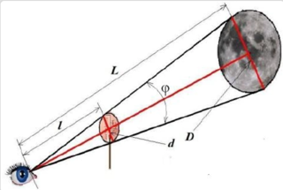

Расчет расстояния от луны до земли с поомощью монетки
Для эксперимента понадобятся: диск (монетка), линейка
Ход работы:
- Прикрепите подготовленный диск клеем или пластилином к какой- либо подставке (булавка, спичка, зубочистка и т.п.), так чтобы за подставку можно было держать диск.
- Выберите для эксперимента вечер, когда на небе видна полная Луна. Станьте так, чтобы Луна попала в поле зрения.
- За подставку держите диск перед глазами в вытянутой руке, придвигая, или отодвигая его от себя, добейтесь такого положения, чтобы диск полностью закрыл Луну.
- Измерьте расстояние l от глаза до диска

Зная диаметр диска и его расстояние до глаза, и вычисляя их отношение, можно определить отношение видимого диаметра Луны и ее расстояния до наблюдателя (исходя из подобия треугольников) D / L = d / l где D - диаметр луны, L - расстояние до луны. Следовательно L = Dl/d